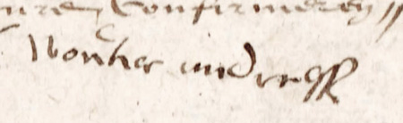
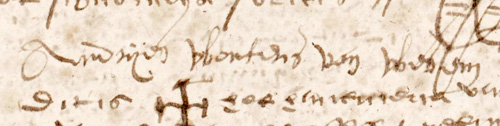
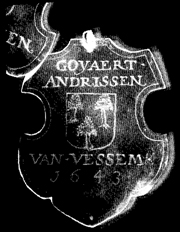

Van Vessem
I
Wouter Andriessen van Vessem
Geboren circa 1554, overleden tussen 31 augustus 1592 en 9 juni 1596. Op 31 augustus 1592 heet Wouter circa 38 jaar oud te zijn (RA 300,f.176r-1), voor zijn geschatte overlijdensdatum zie RA 301,f.67r-1(306).
|
 |
Moergestel, 7 januari 1586: de handtekening van Wouter Andriessone van Vessem.
Bron: Archief notaris Peter Berys, inv.nr. 4817, f. 71r.
|
Provisor van de tafel van de Heilige Geest in Moergestel 1585 en 1587 (zie SA 300,f.50r-1); schepen van Moergestel 1587-1588, 1590-1592.
De schepenbenoeming in 1587 is als volgt weergegeven in het schepenprotocol:
opten xxi-en february anno 1587 is Henrick Goiairts van Elderen president vanden schepenen alhier (nadien hij tselve ampt lange jaeren vromelijck hadde bedient) deser werelt overleden in wiens plaetse totten schependomme es geeligeert Wouter Andriessz van Vessem die sijnen behoorlijcken eedt heeft gedaen aen handen van Aerden Hoppenbrouers schouteth opten xiij-en aprilis 1587...
Bron: Archief van de schepenbank van Moergestel, inv.nr. RA 300, folio 75 recto-3.
Gehuwd met Marijke de Brouwer, dochter van Goijaart Aarts de Brouwer en Lijsbet de Wit. Zij hertrouwde circa 1596 met Daniël Jacob van Gilze, schepen in 1593 en 1597. Beide echtelieden leefden nog in 1610.
N.B.: Goijaart de Brouwer was schepen van Moergestel in de jaren 1555-1557 en was lid van het St. Jorisgilde. Hij overleed in 1557, vóór 2 december.
Uit dit huwelijk bekend:
- Marijke Wouters van Vessem
- Andries Wouters van Vessem Volgt II
- Hilleken Wouters van Vessem
Getrouwd met Jan Jacob Janssen
- Lijsken Goyaerts van Vessem
Getrouwd met Andries Jan Peeters
Bron: Schepenbankarchief Moergestel, inv.nr. 302, folio 41v, 29 december 1605; zie ook De Brabantse Leeuw XLVII (1998) p.3
II
Andries Wouters van Vessem (c.1578-1636)
Geboren circa 1578, begraven Moergestel 18 april 1636. In 1614 heet hij rond de 36 jaar oud te zijn (NA 4818, f. 67r de dato 14 mei). Schepen van Moergestel in 1620 en 1624. Gehuwd met Adriana Mutsaerts, dochter van Denis Cornelis Mutsaerts en Jenneken Jacob Jan Wouters.
|
 |
Moergestel, 16 mei 1620: de handtekening van schepen Andries Wouters van Vessem.
Bron: Archief notaris Peter Berys, inv.nr. 4818, f. 133v.
|
Uit dit huwelijk bekend:
- Wouter Andriessen van Vessem Volgt III
- Margaretha Dries Wouters van Vessum
Gehuwd Moergestel 12 nov 1639 met Adriaan Adriaan Taet, weduwnaar Elisabeth Adriaen Adriaen Appels, die werd begraven te Moergestel op 28 jan 1674. Getuigen bij het huwelijk: Andreas Adriaan Taet, Jan Andries van Vessem, Willem Coomans. Deze laatste is een jaar later ook getuige bij het huwelijk van Wouter Andriessen van Vessem, maar dan onder de naam Willem Gerard Coomans. Zo is hij te identificeren als meester Willem Coomans, geboren omstreeks 1617 en schoolmeester te Moergestel. Uit het eerste huwelijk van Adriaen Adriaen Taet was een dochter Adriaentje geboren, die trouwde met Jan Geraerts Verheyden, sinds 1655 volledig eigenaar van het Hooghuys te Diessen (De Brabantse Leeuw XLV (1976) p.123).
Kinderen:
- Andreas Taet
Gedoopt Moergestel 6 feb 1641 (Willem Jacobus de Lauw en Elisabeth Nicolaas)
- Jan Taet
Gedoopt Moergestel 10 maart 1643 (Nicolaas Goossen en Margareta Adriaans)
- Maria Adriaan Adrianissen Taet
Gedoopt Moergestel 9 dec 1646 (Cornelis Daniels en Maria Peeters Huijben)
- Lijsken Andries van Vessem (Elisabeth)
Gehuwd Moergestel 8 juni 1637 met Nicolaas Goossen (Goesswini) Henricx. Getuigen: Jan Goossen en Willem Coomans.
- Goeijaert (Godefridus) Andriessen van Vessem
Koning van het Sint Jorisgilde te Moergestel 1643, zijn schild is bewaard gebleven. Het Cijnsboek der heerlijkheid Moergestel noemt Nicolaas, Peter, Adriaantje en Willemijn, kinderen van Adriaantje, weduwe Goyaart van Vessem, als eigenaren bij deling van zekere gronden op de buitenvelden in Moergestel. Voor hen was Andries Wouters van Vessem de eigenaar.
Bron: Rijksarchief Noord Brabant, Familiearchief Van den Boagaerde van Terbrugge, inv.nr.1483, Cijnsboek Moergestel 1689-1811, folio 98 en 98v.

Gehuwd Moergestel 20 nov 1646 met Adriana Willems Claessen, die te Moergestel op 16 mei 1707 werd begraven. Getuigen bij het huwelijk: Wouter Andriessen en Nicolaas Henricx.
|  |
|
Afbeelding 1 Het koningsschild van Goyaert Andrissen van Vessem uit 1643; wapen met 2+1 maal een uitgerukte boom
|
Uit dit huwelijk:
- Adriaentje Goijert Driessen
Gedoopt Moergestel 30 aug 1647 (getuigen: Peter Huijbrechts en Maria Willems)
- Andries Goijerts Andriessen
Gedoopt Moergestel 26 feb 1655 (Judocus Willems en Anna Goijerts)
- Peter Goijerts Driessen
Gedoopt Moergestel 1 maart 1659 (Geert Peters en Jenneken Janssen)
jong overleden?
- Nicolaas Goijerts Andriessen van Vessem
Gedoopt Moergestel 11 nov 1661 (getuigen Andries Jan Ansems & Adriana Wouters) Schepen van Moergestel 1714-1717. Voor zijn testament de dato 12 dec 1719 zie SA 341, Protocollen van testamenten 1709-1731, f.149v, scan 150.
Claes van Vessem werd op 11 april 1699 als getuige gehoord door de Stadhouder van de Hoogschout van 's Hertogenbosch, inzake een langslepende moordzaak. Op 15 maart 1692 was de president-schepen van Moergestel, Simon van Stockum, in zijn rijtuig doodgeschoten.
Claes weigerde tijdens de zitting enige verklaring af te leggen, hoewel hij een cruciale getuige was. De vermoedelijke dader Otto van Vaerle, herbergier te Moergestel, had hem immers 'geconfesseert dat hij Van Stockum hadde dootgeschoten"
(bron: Nationaal Archief, Archief van de Staten Generaal, Bijlagen, Ingekomen stukken 18 april 1699, inv.nr. 5131)
Getrouwd voor schepenen van Oisterwijk 4 sep 1707 met Willemijn Wouter van de Ven uit Haaren (begraven Moergestel 14 apr 1718). Getuigen: Thomas Leurs & Willem Vermij.
Uit het eerste huwelijk (niet compleet):
- Adriana
Gedoopt Moergestel 6 dec 1708 (doopgetuigen: Petrus van Vessem & Maria van de Ven qui non adfuit)
- Catharina
Gedoopt Moergestel 29 okt 1710 (getuigen: Dionijsius van Vessem & Joanna Vromans namens Maria Wouter van de Ven)
- Wouter Nicolaus van Fessum
Gedoopt Moergestel 14 okt 1712 (getuigen: Adriana de Loos & Hermanus Petrus Smolders). Hij woonde later in Tilburg (Reijt) alwaar hij op 21 april 1743 trouwde met Johanna Adriaan Smulders, gedoopt Tilburg 6 jan 1712 als dochter van Adriaen Aert Smulders bij Marij van Abelen. Getuigen bij het huwelijk: Jan Nicolaas van Fessum, broer van de bruidegom en Arnoldus Adriaan Smulders, broer van de bruid.
Uit dit huwelijk (niet compleet):
- Willemijn Wouter van Vessem
Gedoopt Tilburg 16 feb 1751, overleden aldaar 23 maart 1831. Doopgetuige: Catharina van Vessem. Getrouwd Tilburg 9 sep 1781 met Cornelis van Oerle uit Tilburg (Corvel); getuigen: Bartholomeus van Oerle, broer van de bruidegom en Jan Adriaan Smolders oom van de bruid. Willemijn woonde ten tijde van haar huwelijk in Stokhasselt en bij haar overlijden op de Korvel; aangever is de zoon Cornelis van Oerle, 37 jaar oud, smid. Voor haar testament, zie Notarieel Archief Tilburg inv.nr. 142, f.48 anno 1793. Bij de doop van haar zoon Wouter van Oerle te Tilburg 3 maart 1785 heet zij Wilhelma van Gestel .
- Adriana
Gedoopt Moergestel 10 okt 1714 (doopgetuigen: Seijke van Laerhoven namens Joannes Wouter van de Ven & Maria van Vessem) .
Vervolgens 12 dec 1719 voor schepenen van Moergestel getrouwd met Maria Wouter Hendricx
uit Moegestel, weduwe van Laureijs van Opstal. Kerkelijk huwelijk volgt aldaar
op 13 december (getuigen: Willem Janssen & Catharina Bucken).
Uit dit tweede huwelijk:
- Willemijn
Gedoopt Moergestel 1720, begraven Tilburg 4 juli 1791. Doopgetuigen: Maria Jacobs & Henricus Jansse Smolders. Getrouwd met Jan Snellaers ook wel Snelders, die zijn vrouw overleefde en in 1791 in de buurt Oerle woonde.
- Joannes
Gedoopt Moergestel 31 maart 1723 (getuigen: Adrianus Walterus Hendrickx & Maria Christianus Janssen namens Maria Cornelis Moonen)
- Peter Driessen Goijerts van Vessum
Gedoopt Moergestel 20 dec 1665, begraven Diessen 6 aug 1731. Doopgetuigen: Nicolaas Stapels en Maria Gerit Jansen. Gehuwd voor schepenen van Diessen 28 oktober 1709 met Willemijn Aerts van Ghestel, geboren te Oisterwijk en weduwe Jan Michiel Taet; hertrouwd voor schepenen van Diessen 18 jan 1712 met Maria Cornelis Moonen, gedoopt te Diessen 30 maart 1673 en begraven aldaar 1 mei 1730, dochter van Cornelis Anthonis Moonen uit Baeschot, wagemaker, bij Heijlken Jan Leijtens. Getuigen bij het tweede huwelijk: Hendrik van Wintelroij & Laureijs van den Nieuwenhuijsen.
Uit het tweede huwelijk (niet compleet):
- Adriana Peter van Vessem
Gedoopt Diessen 12 aug 1713 (doopgetuigen: Nicolaus van Vessem & Elisabetha Tielens)
- Willemijn (Wilhelmina) Goijerts van Vessem
Begraven te
Moergestel 22 september 1710, als weduwe. Gehuwd aldaar op 19 januari 1677 met Theunis Coenen van Eersel (Antonius Conrardus van Iersel), weduwnaar Anna Jan Goossen Baeten.
Het huwelijkspaar verkrijgt kerkelijke dispensatie wegens verwantschap in de
vierde graad. Getuigen: Adrianus Lommaerts en Elizabeth [uxor?].In 1699 verklaarde Peter Walschot, inwoner van Moergestel, voor de hoogschout van 's Hertogenbosch dat Willemijna van Vessem, vrouw van Teunis Coenen van Eersel, wist wie de moordernaar van de president schepen was. Hij had immers gehoord dat 'haer broer Nicolaes van Vessem' [..] 'haer hadde gezeght dat Oth van Vaerle aen hem hadde geconfesseert dat hij Van Stockum hadde dootgeschoten' (zie de opmerking boven bij Claas van Vessem).
Uit dit huwelijk:
- Godefridus Antonis van Eersel
Gedoopt Moergestel 9 maart 1680 (Walterus van den Boer & Elizabetha Driessen van Vessem)
- Adamus Antonis van Eersel
Gedoopt Moergestel 12 feb 1685 (Nicolaus Goijers van Vessem & Adriana Joost Vos)
- Andries Antonis van Eersel
Gedoopt Moergestel 16 feb 1688
- Adriana Antonis van Eersel
Gedoopt Moergestel 6 juni 1691 (Maria Antonis van Iersel & Petrus van Vessem)
- Jenneken Goijaert van Vessem
Gehuwd (RK) te Moergestel op 7 november 1677 met Wouter Jaspers van den Boer.
Getuigen: Cornelius Kerckhoven en Joanna van Valen.
Uit dit huwelijk:
- Elizabeth Wouter Jaspers van den Boer
Gedoopt Moergestel 6 jan 1678. Doopgetuigen: Andreas Jaspers van den Boer en Margareta Adrianus Taet. Gehuwd (RK) Oisterwijk 6 maart 1707 met Theodorus Jacob van de Laer. Getuigen: Guilielmus van Esch & Adrianus Hamssens. Hij hertrouwt
in Oisterwijk (RK) op 17 aug 1720 met Adriaantje Willem Brocken.
Uit dit huwelijk:
- Peternel van de Laer Gedoopt Oisterwijk 21 dec. 1707
- Joannes van de Laer Gedoopt Oisterwijk 21 dec 1709 (Joannes van der Laer & Guilielma van Vessem)
- Francisca van de Laer Gedoopt Oisterwijk 12 april 1712
- Elizabeth van de Laer Gedoopt Oisterwijk 15 jan. 1714
- Helena van de Laer Gedoopt Oisterwijk 22 jan. 1716
- Francois van de Laer Gedoopt Oisterwijk 13 jan. 1718
- Antonius van de Laer Gedoopt Oisterwijk 2 maart 1719
- Jenneken Wouter van den Boer Gedoopt Oisterwijk 18 nov. 1679
- Jaspertjen Wouter van den Boer Gedoopt Oisterwijk 27 aug. 1684
- Adriaentjen Wouter van den Boer
- Goyaert Wouter van den Boer Gedoopt Oisterwijk 30 jan. 1690
- Margriet Wouter van den Boer
III
Wouter Andriessen van Vessem
Gildebroeder van het Gilde van Sint Joris in Gestel 1659. Gehuwd Moergestel 17 feb 1640 met Adriana Appels. Getuigen: Adriaan Adriaan Taet, Jan Arnoldus en Willem Gerard Coomans.
Uit dit huwelijk:
- Andries
Gedoopt Moergestel 14 nov 1640. Doopgetuigen: Willem Jacobs en Maria Adriaans
- Adriaan
Gedoopt Moergestel 24 jan 1643 (Nicolaas Goossen en Ida Jacobus de Lauw)
- Jan
Gedoopt Moergestel 7 apr 1645 (Goijert Andriessen en Johanna Adriaans)
- Adriaan van Vessem
Gedoopt Moergestel 13 dec 1645 (Wouter Janssen en Elisabeth Janssen). Overleden voor 22 okt 1698, als Andries van Vessem ‘oom paternel’ en Anthonij van Santen, stiefvader, door schepenen van Den Bosch worden aangesteld als momboiren over de onmondige en niet bij voornaam genoemde zoon van Adriaen van Vessem bij Arnoldina van Hijnsbergen, die is hertrouwd met voornoemde Van Santen. De benoeming is nodig vanwege een erfdeling van de goederen van ‘Adriaentie weduwe van Wouter van Vessem, grootmoeder, overleden te Moergestel’. (Zie Bossche Momboirboeken 1697-1809, inv.nr. 1927, f. 2).
- Andries van Vessem
Gedoopt Moergestel 28 april 1648, aldaar begraven 20 maart 1710.
Doopgetuigen: Jacobus de Bruijn en Elisabeth Jacobs). Jacobus Arnoldus de Bruijn was op 24 sep 1639 te Moergestel getrouwd met Maria Adriaan Appels, onder getuigenis van Adriaan Adriaan Taet en Thomas Arnoldus de Bruijn. Hij zal een zwager van Adriana Appels zijn geweest.
- Adriana Wouter Andriessen van Vessem
Gedoopt Moergestel 8 mei 1653, aldaar begraven 28 juli 1698. Doopgetuigen: Jan Andriessen en Elisabeth Henrics. Getrouwd Moergestel 25 jan 1694 met Jan de Loos; getuigen: Jan van Wouw, Laurentia van den Oever en Jan Roestenburg.
Uit dit huwelijk:
- Margarita Joannis de Loos
Gedoopt Moergestel 23 juli 1695 (Leonardus van den Oever en Adriana Wouters van Vessem).
- Maria Joannis de Loos
Gedoopt Moergestel 6 juli 1697 (Laurentia van den Oever namens Andries van Vessem, en Cornelis de Loos).
- Denis Wouters van Vessem Volgt IV
- Jacobus Wouter Andriessen
Gedoopt Moergestel 16 dec 1661 (Henric Simons en Maria Cornelis)
Drie zonen uit dit huwelijk duiken op in het cijnsboek van de heren van Moergestel: Andries, Denis en Adrianus, kinderen van Wouter van Vessem (Rijksarchief Noord Brabant, Familiearchief Van den Bogaerde van Terbrugge, inv.nr. 1483: Cijnsboek der heerlijkheid Moergestel 1689-1811 met register uit 1769, folio 98v).
IV
Denis Wouters van Vessem (1656-1719)
Borgemeester van De Heijzen en De Heuvel in Moergestel 1717. Gedoopt Moergestel 25 februari 1656, aldaar begraven 20 april 1719. Doopgetuigen: Conradus Adems en Maria Adriaenssen.
Op 22 sep 1696 deelt Denis namens zijn vrouw de erfenis van zijn schoonouders, Adriaen Jaspers en Margrita dochter Jacop [P.?] van Dooren, met zijn zwager Jasper Adriaen Jaspers. De erfdeling verloopt per loting.
Bron: SA 309, Protocol van transporten 1695-1706, f.64v-71r.
Op 22 dec 1698 vindt voor schepenen van Moergestel een financiële afwikkeling plaats tussen Heijltien Adriaen Jaspers geassisteerd door haar man en momber Denijs Wouters van Vessem, mitsgaders Jasper Adriaen Jaspers, enerzijds, en anderzijds Sr. Adriaen Lombaers, met een verwijzing naar een koop van percelen land op 30 okt 1698 (slecht leesbare akte).
Bron: SA 309, Protocol van transporten 1695-1706, f.175v-176r, scan 180.
Op 17 juni 1713 verkoopt Denis van Vessum namens zijn vrouw Heijltien Adriaan Jaspaers van Mierde een huis, met het hofken daaraan gelegen genoemd de aanstede, groot omtrent een kwart loopens, gelegen in de Heuvelstraat in Moergestel, met nog een perceel weiveld van een loopensaet, aan Adriaan Jaspers van Mierde "sijnen swager"; deze goederen, zo verklaart Denis, zijn hem aangekomen uit de erfenis van zijn schoonouders, die eerder is gedeeld voor schepenen van Moergestel.
Bron: SA 310, Protocol van transporten 1707-1719, f.110, scan 117.
Na zijn dood benoemen de schepenen van Moergestel op 14 juni 1719 Peeter van Vessum wonende te Baerschot en Adriaen Jasper van Miert tot principaal momber respectievelijk toeziender over de onmondige nagelaten kinderen. Vanaf oktober van dat jaar vinden met regelmaat publieke verkopen plaats van meubulaire goederen, eiken, en schaarhout. Op de eindafrekening de dato 20 maart 1726 staan op folio 143 de handtekening van Adriaen Jan Mulders en het handmerk van Marit (sic) Denijs van Vessem. Denis kon niet schrijven, zo verklaart hij in een oude schuldbrief die is opgenomen in de voogdijrekening.
Bron: SA 551, Voogdijrekening van Peter van Vessum en Adriaen van Miert voor de onmondige kinderen van wijlen Denijs van Vessum, daer moeder aff was Heijltje van Miert, 217 scans.
Op 4 nov 1719 volgt aangifte voor de collaterale successiebelasting door Peter van Vessem en Adriaen Jasper van Miert. Bovenaan in de lijst met onroerende goederen staat:
Een geregten vierde part in een huijsinge, schuure, en schop daer op staenden en gehoorende groot ontrent samen een loopen saet, gelegen binnen dese heerlijckheijt van Moergestel inden gehugten van den Heijsen, aldaer den gemeene wegt oost, Arnout Lombaers west, Dirck Jan Jacops suijt, en noirt; sijnde dese goederen t samen intgeheel jaerlijcx belast, eerstelijck met twee gulden drie stuijvers chijns aenden Heere alhier van Moergestel, item alnogh drie stuijvers chijns aenden H. Geest van Den Bos, item alnogh een stuijvers chijns aenden heer rentmeester Van Slingelant gg (sic), item alnogh aenden armen alhier een somme van eenen gulden stuijvers, item alnogh een rogge pagten van seven vat rogge aenden armen alhier voorschreven [et cetera, lange lijst lasten die op dit huis rusten] — getaxeert voorschreven het vierde part op 37-10-0.
Item alnogh alsvoor in een huijs schuere en daerop staende landerijen groot ontrent een loopensaet gelegen als voor, aldaer den gemeene wegt oist, Dirck Jan Jacops west, suijt en noirt, getaxeert alsboven op 15-0-0.
De lijst gaat verder met percelen grond. Denis van Vessem blijkt verder medebezitter te zijn geweest van een huis met flink wat grond in Breugel. De successielijst meldt een zestiende deel in een huis met hof met aangelag, groot omtrent een lopensaet, gelegen "Op Oirle" binnen het dorp Breugel, oftewel in het gehucht Oerle, ook wel Breugels-Oerle genoemd.
Bron: SA 650, Protocol van aangiften en taxaties voor de collaterale successierechten, scans 154-164.
Getrouwd Moergestel 2 juni 1696 met Helena (Heijltje) Adriaan Jaspers van Miert, gedoopt Moergestel 12 juli 1668, aldaar begraven 13 maart 1719, dochter van Adriaan Jaspers Wouters & Margaretha Jacobs van Doren. Getuigen bij het huwelijk: Nicolaus van den Oever, N. Aerts; Adriaan Peeter van Geffen en Elisabeth Dirck van Corven
(RK).
Uit dit huwelijk:
- naamloos kind (begr. 17 mei 1697)
- Adriaentje
Gedoopt Moergestel 23 feb 1698, begraven aldaar 10 sep 1725. Doopgetuigen: Andries Wouter van Vessem en Maria Daniel de Bresser. Gehuwd Moergestel 10 december 1719 met Dirck Aert de Cort (Theodorus Adriaan de Cort) geboren te Enschot, gedoopt Oisterwijk 3 jan 1697 als zoon van Arnoldus Peeters Gommers de Kort & Maria Jan Lommers, begraven Moergestel 28 dec 1761. Hij hertrouwde te Moergestel 17 februari 1726 met Anna Cornelia Coolen uit Tilburg
Uit dit huwelijk:
- Denijs de Cort
Gedoopt Moergestel 23 feb 1721. In 1782 eigenaar van een huis op de Vinkenberg (SA 68, 86v). Getrouwd voor schepenen van Moergestel 9 feb 1749 met Joanna Peters van der Zeden (alias De Zeed, alias Dusée; geboren te Diessen, begraven Moergestel 28 okt 1762), weduwe Adriaen Janssen van Esch. Getuigen bij het huwelijk: Embertus van den Boer & Catharina Nuijten
Uit dit huwelijk:
- Adriana Denis de Kort (gedoopt Moergestel 23 apr 1750)
- Maria Denis de Kort (gedoopt Moergestel 3 sep 1751)
doopgetuigen: Theodorus de Cort & Maria van der Zeden
- Cornelia de Kort (gedoopt Moergestel 22 apr 1753)
Moeder werd Joanna Petrus Besse genoemd. Doopgetuigen: Petrus Besse & Joanna Cornelius Colen
- Cornelia Denis de Kort
Gedoopt Moergestel 17 jan 1755,
aldaar begraven op 17 augustus 1782. Doopgetuigen: Joannes de Cort & Gertrudis Petrus de Seda (sic). Getrouwd aldaar 6 feb 1780 met Peter
(Pero) Perkin, geboren te Turnhout. Hij hertrouwt voor schepenen van
Moergestel op 15 dec 1783 met Geertruij van Esch, geboren te Gemonde en
woonachtig te Hilvarenbeek.
Uit dit huwelijk:
- Denis Peter Perkin
Gedoopt Moergestel 12 nov 1780, aldaar overleden 8 maart 1837. Getrouwd aldaar 14 mei 1809 met Cornelia Hoeven. In het eerste Kadasteroverzicht uit 1831 vermeld als eigenaar van een boerderij op Vinkenberg, Moergestel, met de noordkant grenzend aan
het erf van de de weduwe Norbert Mulders, en met de zuidkant aan het Lommestraatje.
- Franciscus Perkin
Gedoopt Moergestel 17 juni 1782.
Doopgetuigen: Elizabeth Perkin namens Joanna Maria de Kort.
- Adriana Maria Denis de Kort (gedoopt Moergestel 28 jan 1757)
Doopgetuigen: Arnoldus de Cort & Margareta Adrianus Meulders
- Peter Denis de Kort
Gedoopt Moergestel 11 feb, doopgetuigen: Wilhelmus de Zee & Martina van Kameren.
- Adriaan Denis de Kort
Gedoopt Moergestel 21 apr 1761, doopgetuigen: Petrus Theodorus de Cort & Anna Catharina de Cort. Aldaar getrouwd voor schepenen 27 april 1783 met Maria Jan Bierkens.
Uit dit huwelijk:
- Willem de Kort
Gedoopt Moergestel 18 juli 1794, aldaar getrouwd 13 jan 1820 met Adriana Ketelaars, gedoopt Moergestel 25 april 1793 als dochter van Adriaan Ketelaars bij Maria Appels. Hertrouwd te Moergestel 25 okt 1855 met Pitronella Mathijssen, geboren Moergestel 10 dec 1801 als dochter van Jan Mathijssen bij Wilhelmina Francisca Mulders.
- Aernout de Cort
Gedoopt Moergestel 30 april 1723. Borgbrief voor Beers afgegeven 3 feb 1764. Getrouwd voor schepenen van Moergestel 15 feb 1750 met Peternel Jan Meulenbroek (Molenbroeckx, geboren te Middelbeers), weduwe Joannes Christianus van Gorcus (civ.huw. Moergestel 7 mrt 1734), Adrianus Jan Hoeven (civ.huw. Moergestel 2 dec 1742) en Willem Jan Meulders (civ.huw. Moerg. 7 feb 1745). Getuigen: Joannes Hoeven & Maria Melis. Door de kerk gedispenseerd wegens gesloten tijd.
Uit dit huwelijk:
- Adrianus de Cort (gedoopt Moergestel 30 sep 1751) doopgetuigen: Theodorus de Cort & Antonetta van Eersel
- Joannes de Cort (gedoopt Moergestel 28 dec 1754) doopgetuigen: Petrus Meulenbrock & Anna Catharina Joannis Colen
- Jan Dirck de Cort
Gedoopt Moergestel 27 mei 1725, aldaar begraven 11 feb 1784. Getrouwd voor schepenen van Moergestel 27 juni 1762 met Maria Joannes de Laet (geboren Moergestel, begraven Diessen 7 maart 1770); getuigen: Joannes de Laet & Dionysius Theodorus de Cort. Het echtpaar kreeg een borgbrief voor Diessen 22 januari 1766. Ten tweede maal getrouwd voor schepenen van Moergestel 15 juli 1770 met Helena Waltherus Spapens (geboren Hilarenbeek). Getuigen bij dit huwelijk: Joannes Meulders & Dionisius de Kort
Uit het eerste huwelijk:
- Adriaan Jan de Cort (gedoopt Moergestel 19 juni 1763, aldaar overleden 23 augustus 1803) Getrouwd Moergestel 1 juli 1791 met Johanna Johannes Mutsaerts (gedoopt Moergestel 2 mei 1771, aldaar overleden 8 sep 1829) dochter van Johannes Cornelis Mutsaerts en Maria de Brouwer
Uit dit huwelijk:
- Jan de Cort (gedoopt Moergestel 10 augustus 1793) Doopgetuigen: Theodorus de Kort & Maria Brouwers
- Maria Katharina de Kort (gedoopt Moergestel 27 jan 1796) Doopgetuigen: Digna van de Loo names Maria Mutsaerts & Joannes de Laet
- Jacoba de Kort (gedoopt Moergestel 28 dec 1797) Doopgetuigen: Maria Brouwers namens Cornelia Mutsaerts
- Theodora de Kort (gedoopt Moergestel 13 feb 1801) Doopgetuigen: Maria Claessen namens Antonia Mutsaerts
- Petronilla de Cort (gedoopt Moergestel 8 maart 1803, overleden Boxtel 13 maart 1875) Doopgetuigen: Margarita van de Sande names Margareta Rijkers. Getrouwd Vught 6 mei 1827 met Jan Hendrik Maas (gedoopt Vught 8 maart 1800, overleden Boxtel 4 mei 1872) zoon van Hendricus Maes & Hendrina van de Ven
- Petronilla de Cort (gedoopt Moergestel 14 april 1766, begraven Diessen 25 jan 1774) Doopgetuigen Arnoldus de Cort & Catharina de Laet
- Theodorus de Cort (gedoopt Diessen 27 maart 1769)
- Maria Dionisi Walteri van Vessem
Gedoopt Moergestel 18 sep 1700, aldaar begraven 16 dec 1700. Doopgetuigen: Joannes de Loose
en Joanna Adriaan Brocken namens Arnolda Antonius van Santen.
- Wouter Dionisii Wouter van Vessem
Gedoopt Moergestel 21 sep 1701, aldaar begraven 24 sep 1701. Doopgetuigen: Andreas Wouter van Vessem en Maria weduwe Daniel de Bresser. Over de tweede doopgetuige weten we meer: Maria Jaspers was te Moergestel als Maaiken Jasper Adriaens op 25 feb 1676 getrouwd met Daniel Adriaan de Bresser, die aldaar 17 feb 1698 was begraven. Dit echtpaar woont op den Winckenbergh te Moergestel en maakt voor schepenen aldaar een testament op 28 aug 1697 (De Brabantse Leeuw XXII (1973) p.147-148).
- Joanna Dionisii van Vessem
Gedoopt Moergestel 29 sep 1702. Doopgetuigen: Andreas van Vessem en Adrianus van Vessem.
- Margaretha van Vessem
Gedoopt Moergestel 11 juni 1705, aldaar begraven 12 okt 1770. Doopgetuigen: Andries van Vessem en Joanna Goijart Roosen. Gehuwd Moergestel 3 feb 1726 met Adriaen Jan Mulders, geboortig van Heukelom. Zie aldaar voor kinderen uit dit huwelijk.
- Maria van Vessem
Gedoopt Moergestel 3 feb 1708, aldaar begraven 29 apr 1744. Doopgetuigen: Andries van Vessem en Margareta Jasper van Meert. Gehuwd Moergestel 8 juli 1731 met Willem Jan Mulders (begr. Moerg. 1 mei 1748), weduwnaar Adriana Jan Timmermans. Geen kinderen uit dit huwelijk.
- Cornelia Maria van Vessem
Gedoopt Moergestel 29 okt 1710, aldaar begraven 1 okt 1719. Doopgetuigen: Nicolaus van Vessem en Margareta Peter van Corven.
De erfenis van Denis van Vessem (een aanzienlijke hoeveelheid grond in Moergestel) werd verdeeld op 7 februari 1726 tussen Dirk de Cort, als voogd over zijn drie onmondige kinderen; Adriaan Jasper van Miert, als toeziender over de onmondige Marie van Vessem, vrouw van Willem Jan Mulders; en ten slotte Adriaan Jan Mulders als voogd over zijn vrouw Margriet van Vessem
bron: Schepenbankarchief Moergestel, inv.nr. 311, folio 274-279